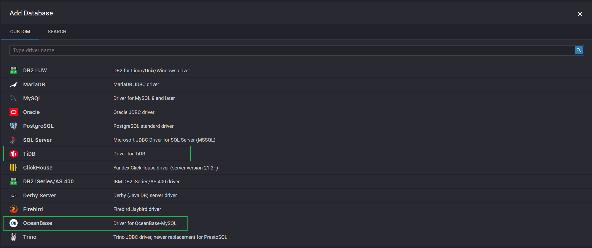
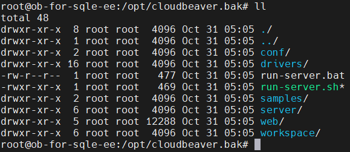

使用SQLE定制CloudBeaver包快速搭建环境
定制包简介
简介
SQLE在原有CloudBeaver release_22_2_0 分支的基础上, 增加了对OceanBase 和 TiDB 的支持, 方便使用 SQLE 管理 OceanBase 和 TiDB 的用户更方便的使用SQL工作台功能.
同时, SQLE 调整了CloudBeaver的部分默认配置, 用户在使用SQLE定制包时将无需在手动配置环境, 方便用户更好的集成两者
效果展示
新增两种数据库类型的支持 
定制分支与原分支区别详情
- 支持并默认启用 OceanBase 驱动
- 支持并默认启用 TiDB 驱动
- 默认访问路由调整为 /sql_query, 便于与SQLE集成
- 默认会话超时时间调整为12小时(之前是30分钟)
- 移除了默认创建的 PG 演示实例和 SQLite 演示实例
- docker镜像名调整为 actiontech/sqle-cloudbeaver:22_2_0
- 优化打包方式, 大幅提高打包效率
- 默认主题改为暗色
项目地址
定制CloudBeaver分支: https://github.com/actiontech/cloudbeaver/tree/sqle_22_2_0
定制DBeaver分支: https://github.com/actiontech/dbeaver/tree/sqle_22_2_0
定制包下载地址
https://github.com/actiontech/cloudbeaver/releases/tag/sqle.22.2.0
使用说明
编译和运行项目
与 原项目编译运行方式 保持一致
编译docker镜像
进入项目的 deploy/docker 目录, 然后执行 ./make-docker-container.sh
运行docker镜像
方式一: 进入项目的 deploy/docker 目录, 然后执行 ./run-docker-container.sh
方式二: 手动启动镜像, 镜像参数和 原项目镜像参数 保持一致
已有CloudBeaver环境升级为定制环境
CloudBeaver程序目录下应当有以下几个文件 
将CloudBeaver程序目录下的conf目录和workspace目录移动到定制CloudBeaver程序目录下(覆盖原目录), 随后停止旧CloudBeaver, 运行新CloudBeaver即可